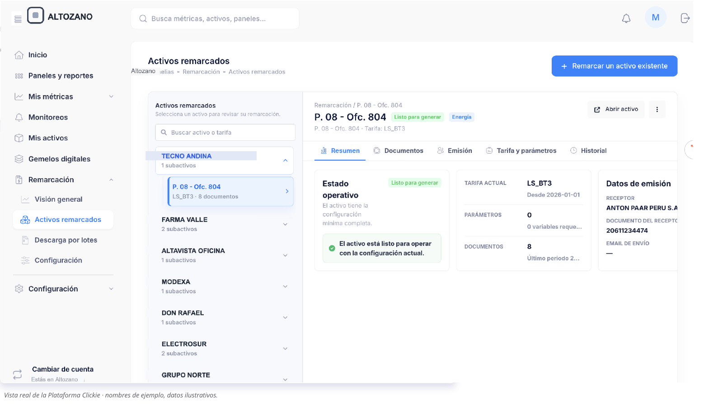
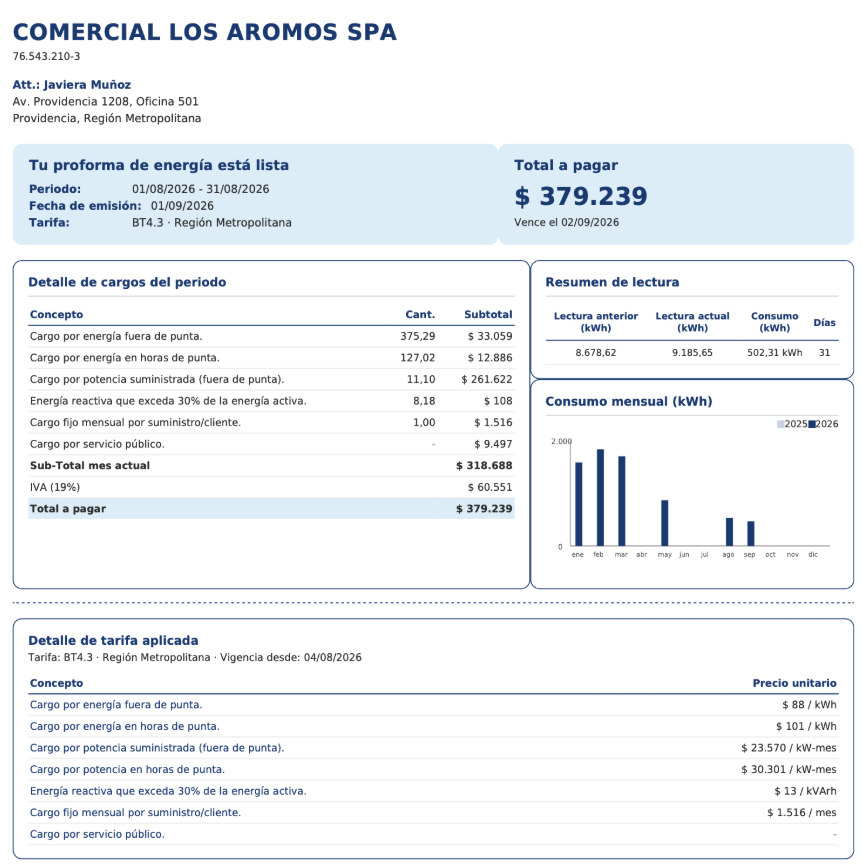

Cierre de mes en minutos
Genera y descarga proformas sin consolidar planillas manualmente.
Mide el consumo de cada local, calcula su cobro y genera proformas automáticamente.
Menos planillas, menos reclamos y más trazabilidad.

Genera y descarga proformas sin consolidar planillas manualmente.
Cada local recibe el detalle de su consumo, tarifa y cargos.
Detecta consumos nocturnos y desvíos durante el mes.
Historial, documentos, tarifas y consumos en una misma plataforma.
Conectamos tus remarcadores existentes y registramos el consumo.
Aplicamos automáticamente la tarifa de cada punto.
Generamos la proforma y dejamos el historial disponible.
Sin reemplazar tus medidores existentes.

Consumo, cobros, documentos e historial siempre disponibles.
Estado completo del mes
Evidencia para responder consultas
Descarga masiva de documentos
Antes de facturar, cada local puede recibir una proforma con el detalle de su consumo y cargos.
Menos preguntas. Más respaldo para cada cobro.
